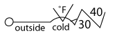
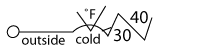
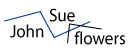
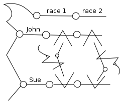

Introduction
This begins a tutorial on the Ouwi writing system. In the introduction we break the sections down into the parts of speech. This is not a perfect fit, as Ouwi is built more on how different people, things, events and concepts relate than on breaking those relations into neat sentence-sized chunks. Nonetheless, by the end of the introduction, you should be able to construct simple sentences.
So, let's cover the basics...
Basic Elements
There are four fundamentally distinguishable atoms in the writing system:
| straight line | curve | triangle | circle |
| strings | particles | ||
These atoms cannot combine arbitrarily. Ten symbols (letters) are made up of different combinations of the four atoms. These letters are the fundamental units of meaning which form words and sentences depending on how they are connected. The ten letters are:
Each letter has a personality that should be perceptible with all the ways it is used (however obliquely). The personalities help intuition and each letter also has a story which should further illustrate the contexts in which the letter is used. A one-word summary of what the letters relate to along with the 'title' of the story for each letter follows:
| Letter | Name | Expresses | Story title |
| mo | nouns | Darkness | |
| mou | member or delineation of a set | Volcano | |
| ma | qualifier, an adjective | Waters | |
| muh | questions, change, the future | The Unknown | |
| mi | equivalence | Light | |
| muu | action or relationship | Law | |
| meh | set of things with properties | Color | |
| mii (mы) | command, assertion, or consequence | Sin | |
| maa | range of values, possibility, opportunity | Love | |
| mee | self-conscious action, especially design and creation | The Other |
These letters are only distinguishable by the order of their atoms, so they can be rotated, flipped or bent at the joints, and they will still be the same letter.
There are three ways in which these letters connect:
- Series: from end-point to end-point


- Radiation: a letter's end-point can radiate from the space formed between two adjacent lines of another letter.
- Intersection: a joint formed by two strings within the same letter can intersect a single string of another letter (i.e. the joint's strings must enter and leave by the same string).


'Foreign' words are written in the spaces between two adjacent lines (wherever something can radiate from) or above and below  and
and  .
.

Nouns
The most basic way to denote a 'thing' is with  ('mo'). Often you will name it at the same time, just above the line, as in our 'puppy' example.
('mo'). Often you will name it at the same time, just above the line, as in our 'puppy' example.
To denote an item in a list, we use  ('mou'). If you've got a list of things, then you can have a set, which is denoted
('mou'). If you've got a list of things, then you can have a set, which is denoted  ('meh'). Now, you'd be right, if you told me a set is just one kind of ordinary noun, so how do you link them? Here, .
('meh'). Now, you'd be right, if you told me a set is just one kind of ordinary noun, so how do you link them? Here, .
 This allows us to create our first sentence! 'The apple is a fruit.' Note that this combines the three ways to denote a noun so far.
This allows us to create our first sentence! 'The apple is a fruit.' Note that this combines the three ways to denote a noun so far.

Meh  organizes the placement of the set's elements, the set's properties, and the set's name or definition. This allows us to describe some very complex objects. While looking at this
picture, you should see something like a spreadsheet grid setup.
organizes the placement of the set's elements, the set's properties, and the set's name or definition. This allows us to describe some very complex objects. While looking at this
picture, you should see something like a spreadsheet grid setup.
The mou's  represent the (unordered) elements.
Also note the mi
represent the (unordered) elements.
Also note the mi  letter toward the bottom. Mi in this context (inside an element list) divides different paradigms or sections. The elements below mi here could correspond or overlap with the elements listed above it. This is useful if there is more than one way to break up a set.
letter toward the bottom. Mi in this context (inside an element list) divides different paradigms or sections. The elements below mi here could correspond or overlap with the elements listed above it. This is useful if there is more than one way to break up a set.
For example, you might have the set of 'animals' which could be broken down taxonimically (mammal, reptile, fish, etc), or by habitat or # of chromosomes or anything else. We will come back to mi at the end of our introduction.
Finally, there's one more noun form. A special way to denote people is combining muh  and meh
and meh  like so:
(it should look like an abstract person!). This is used especially for describing classes of people. Let's unpack this a little more
like so:
(it should look like an abstract person!). This is used especially for describing classes of people. Let's unpack this a little more  with the figure on the right; you should see the same two symbols, muh and meh. At the points marked q and s, are little squiggly lines marked l and k. You'll see these occasionally in a figure. The squiggly lines are not part of a letter, but mark the serial context from which they connect. '~k' means 'anything on the path of q OR p. I can also say '~k(q)' for just the path coming out of q. Now back to our little person--a class of people is just one kind of set, so it's fitting that we have a meh. As should be expected, ~k(q) is where you would put members of the class; ~k(p) is where you put properties of the class (e.g. what they do, with their hands--get it!). And ~l(s) is where they are coming from. We will talk more about muh in the questions section.
with the figure on the right; you should see the same two symbols, muh and meh. At the points marked q and s, are little squiggly lines marked l and k. You'll see these occasionally in a figure. The squiggly lines are not part of a letter, but mark the serial context from which they connect. '~k' means 'anything on the path of q OR p. I can also say '~k(q)' for just the path coming out of q. Now back to our little person--a class of people is just one kind of set, so it's fitting that we have a meh. As should be expected, ~k(q) is where you would put members of the class; ~k(p) is where you put properties of the class (e.g. what they do, with their hands--get it!). And ~l(s) is where they are coming from. We will talk more about muh in the questions section.
Of course, you can still use  for people. For example, in native Ouwi, you say 'I' like this: which is pronounced 'mo,' but you don't have to speak Ouwi. You could just as easily write: or .
for people. For example, in native Ouwi, you say 'I' like this: which is pronounced 'mo,' but you don't have to speak Ouwi. You could just as easily write: or .
Adjectives
The main letter to use for attributes is  ('ma'). A most basic example is 'The tank is full.' Ma is used to ascribe attributes or properties to nouns in this case. It's used especially when these properties are observable (and even possibly observed by someone).
('ma'). A most basic example is 'The tank is full.' Ma is used to ascribe attributes or properties to nouns in this case. It's used especially when these properties are observable (and even possibly observed by someone).
When an adjective has a range of possibilities,  ('maa') can be used like in the example 'How cold is it outside?'
'cold' appears in the space above the curve in the maa letter. The two spaces delineated by the three straight lines in front of it are left open for the range of temperatures in this case. So for the reply, we see: "It's 30-40 degrees outside."
('maa') can be used like in the example 'How cold is it outside?'
'cold' appears in the space above the curve in the maa letter. The two spaces delineated by the three straight lines in front of it are left open for the range of temperatures in this case. So for the reply, we see: "It's 30-40 degrees outside."
Now ma,  doesn't have to be an adjective exactly, but it is a qualifier. So if we wanted to specify what the range was of, i.e. degrees Fahrenheit, then we would write it: 
doesn't have to be an adjective exactly, but it is a qualifier. So if we wanted to specify what the range was of, i.e. degrees Fahrenheit, then we would write it: 
This works with mo, too. In "Three birds are flying," 'three' is modifying birds.
You might ask, "If ma is intersecting something, then its serial context is free. What goes on the ma thread, then?" The answer is that the witness is along this path. So to say "I see three birds flying," would be . So the rule here is that if ma is intersecting something, then it's modifying that, but if not, then it falls back to describing the witness.
These two models might seem divergent enough to cause problems. What if we find out who the witness is, only later? Do we have to rewrite the sentence? No, because ma can be intersected, too! We write "John sees that the tank is full" like this: . Note that 'full' could also be in the ma on John's line, and this would be emphasizing that John just perceived the tank as full rather than it actually being full and him noticing it.
So is ma,  , really an adjective indicator? Only in certain circumstances. It's really marking that an observation is happening that has a temporal quality to it (later, the tank might be empty). But this covers a lot of adjectives, and it always affects the line it's on and any intersections qualitatively.
, really an adjective indicator? Only in certain circumstances. It's really marking that an observation is happening that has a temporal quality to it (later, the tank might be empty). But this covers a lot of adjectives, and it always affects the line it's on and any intersections qualitatively.
Verbs
By now, we've seen a couple of verbs already. Ma can be used as a verb when it's passive observation, but the most common letter used for verbs is  ('muu'). The first space generally has the verb, like we saw before in
('muu'). The first space generally has the verb, like we saw before in
When verbs with muu take a direct object it uses the joint on the same side as the verb. So "Sue kisses John" is written
So far we've just used present tense. Past tense is indicated with the familiar letter ma double-intersecting muu. For "Three birds were flying" we write
Does this make any sense with how we understand ma from before? Think about it this way: when an action is done in the past, it is a property of the past. Can we use the same kinds of constructions as before? Yes, just like before, the witness links to ma so we write "I saw the bird fly," as 
A line or joint is only allowed to have two lines intersecting it. When it cannot support another intersection because of pre-existing intersections, we say that it is 'blocked.' Notice that the place where we put our direct object is now 'blocked.' The ma is blocking the joint. Well, if you think about it, one thing that is always the witness to a past event is the 'victim' or object of the action. "Sue kissed John" is . We put 'John' on the other side of muu to indicate that he's not just eavesdropping on the events.
If you tilt your head a little, you might notice that if ma were intersecting something (and therefore describing it), then it is the second space in muu which is not yet filled. This space describes where and when the action took place.
But there are probably a lot of contexts that we could put in this one space. Also, there might be a range of values: 'from dawn to dusk' or 'over the hills and plain.' For this, we'll use maa  which we saw before for a range of values. They can radiate out of the space keeping the context from which they radiate.
which we saw before for a range of values. They can radiate out of the space keeping the context from which they radiate.
"Sue kissed John from Monday to Saturday in the park."
Notice that park was static, and there was no final location. We can also just specify a destination.
Going back to the present tense, we don't need muu  at all, if we are just stating a transition. "The bird flies South."
at all, if we are just stating a transition. "The bird flies South."
Giving and Showing
Though most verbs are represented by writing them in the space of muu, there are a few that are fundamental enough to be conveyed directly in Ouwi. One that we've already seen is expressing 'to see' or 'to witness.' Two others that we'll discuss here are 'to give' and 'to show.'
 means "John gives Sue flowers." (small note: it does not mean that Sue accepted them, so perhaps a more literal translation is "John offers flowers to Sue." ) Here, it's worth bringing up that if a muu's space is empty, its contents is often 'filled' by the serial context going into that side. So, you can say the same thing like this: .
If we are being supra-literal, it actually says "The relationship between John and Sue is described by flowers." For their sake, we can hope that flowers doesn't entirely define their relationship! A somewhat general rule is that when muu is intersected by another letter, that letter brings the context by which we understand the relationship between the items that fill its spaces' contexts.
Conversely, when muu intersects another letter, it generally means that it is somehow controlled by muu's spaces. The space on the same side as the intersection generally has a more active role in the mediation, while the opposite side is more passive. Leaving the abstract theoretical explanations, let's get back to a real example.
 means "Sue shows Betty a turtle." Notice that Sue, doing the showing, is on the same side as the turtle and the letter ma, intersected by muu.
means "Sue shows Betty a turtle." Notice that Sue, doing the showing, is on the same side as the turtle and the letter ma, intersected by muu.
Since 'control' is very tightly related to 'ownership,' this is also how we express posession. is "Sue owns a turtle" or "Sue has a turtle." Note how the meaning changes when the space is filled with a noun instead of a verb.
We've covered a lot of ground and a lot of rules, but, hopefully, you should now have a sense of how basic actions are represented, but action is a huge part of writing and relationships, and so there's plenty more to say.
Commands and 'Must'
"Sue orders John to leave," is: and "Sue orders John not to leave," or "Sue forbids John to leave," is: These examples show the general structure of how mii is used serially. The end closer to the circle is the person or thing doing the ordering/demanding. The person or thing on the other end, pointing into mii is being ordered. The ordered or forbidden actions are in the spaces, with positive commands in the space closer to the circle, and negative commands in the second space, farther away from the circle.
In Ouwi, imperatives are expressed the same way 'must' is used in most English contexts. So, the same construction works for Truth with a capital 'T' with ideas, concepts, and things. So, one way to say that "at 100°C, water boils" is .
Questions & Unknowns
Anything related to the unknown, generally involves muh,  . One way to think about this letter is as a replacement for mo,
. One way to think about this letter is as a replacement for mo,  , when it's an unknown variable. This doesn't always work in practice, but generally does, when either would be at the beginning of a serial chain. In general, let's explore questions by turning some of the sentences we've seen so far into questions (the red is just to highlight muh. Ouwi doesn't attribute meaning to color):
, when it's an unknown variable. This doesn't always work in practice, but generally does, when either would be at the beginning of a serial chain. In general, let's explore questions by turning some of the sentences we've seen so far into questions (the red is just to highlight muh. Ouwi doesn't attribute meaning to color):
"The apple is a fruit." "Can you name a fruit?"
"The tank is full." "What is full?"
"How many birds are flying?"
"What are the three birds doing?"
"Who kissed John?"
"Who did Sue kiss?"
"Who ordered John to leave?"
"What must happen to water at 100°C?"
And, one we've seen before, "How cold outside is it?"
Muh can also be used for dependent clauses. Pay attention to where muh appears in the more-complicated sentence, "David saw the boy to whom Susan gave an apple which she purchased when she visited the store. "
Comparables
Two letters we haven't seen in a while are  mou, which represents items in a list, and
mou, which represents items in a list, and  mi, which we saw before as a paradigm/section separator in a list. Mi, in general, indicates equivalence. When used as a section separator, it's indicating that each section in the list is allegedly or approximately equivalent to the other sections; that is, they represent the same set, just organized or stated differently.
mi, which we saw before as a paradigm/section separator in a list. Mi, in general, indicates equivalence. When used as a section separator, it's indicating that each section in the list is allegedly or approximately equivalent to the other sections; that is, they represent the same set, just organized or stated differently.
Out of list context, we can use mi to indicate that two things are equivalent. The simplest example is converting units of measure. So, '1 lb. is 16 oz.' is:
Similarly, 'orange is made of red and yellow paint' is
This should demonstrate how it is useful to have multiple letters radiating from one context. For equivalence this is appropriate; after all, something can be equivalent to many things. '1 lb. is 16oz. and 0.45 kg. and 4.45 newtons' is
For relative comparisons, we always include maa  because the comparison indicates a range or axis of comparison. Just like in many languages, there is a comparative and superlative form.
because the comparison indicates a range or axis of comparison. Just like in many languages, there is a comparative and superlative form.
To indicate 'most' or 'least', maa intersects  mou.
mou.

For 'more' or 'less,' maa intersects  mi.
mi.
The two structures should look similar! Nonetheless, both have more points and spaces than in most other constructions we've seen, and all of them can expand on the comparison. If you haven't seen it already, this should demonstrate both the power and some of the complexity introduced in non-linear writing. Let's start with the most basic constructions of both:
'Sue is the fastest runner in the league.' and
'Sue runs faster than a cheetah.'

Let's explore the latter sentence's 'hooks,' where we can fill in more information, first. We say 'Sue runs slower than a cheetah' and 'Sue runs 10 mph slower than a cheetah.'
The best way to indicate slower vs. faster is to keep the maa intersecting with the second joint, and instead of changing its orientation, change which line on mi it intersects: the nearer leg for 'faster' and the farther leg for 'slower.'
Two ways to say the same thing,
'Sue runs slower than a cheetah, but faster than John.'
'Sue ran faster than John in one race, but slower in a second race.'
'Sue runs slower than a cheetah at 100m but faster than a cheetah at 5km.'

The latter sentence could be said in a similar way to the first--replace 'race 1' and 'race 2' with 5km and 100m and replace John with cheetah.
Generally, what is being compared is on the maa intersecting the mi. Points of comparison are listed serially off of mi. There is a simpler way to compare two things: 'An elephant is larger than a mouse.' This takes advantage of the fact that maa defines a range, and the range can be defined by examples as much as by units of measure. Note, however, that this construction makes it more difficult to include more information, or make further comparisons.
Conclusion
That marks the end of the introduction to Ouwi. I intend to elaborate on more sophisticated constructions soon, but hopefully you've gotten a sense of how to express yourself or at least how to parse Ouwi letters.
Sample Sentences
I'm using the list of Conlang Wiki Test Sentences to flesh this out.
stay tuned for more.
# simple declarative, intrasitive S+V and transitive S+V+O(+IO) # examples of N+Adj (how many adjs. permitted?) and verb+adv. # questions, yes-no as well as WH- # imperatives (singular and plural subjects) # negative sentences # relative clause constructions # active/passive, if relevant # prepositional phrases # adverbials # comparatives, superlatives # numerals and other quantifiers # sentence complements "think/say THAT..." etc. # infinitive complements "want to..." etc. # word order or emphatic variations, if relevant # use of cases, if present; use of tenses, if present # derivations of nouns and verbs/adjectives, if relevant # subordinate clauses "when..., after..., because..., since..." etc. # conjoined sentences-- and, but, or
Sample Texts
{kind=link}
I'm currently working on a translation of the US Constitution, but it's not yet complete.
{kind=link}
Also, below is a translation of the first passage from the Tao Te Ching. On the left, English is substituted for 'native' Ouwi.
| English Creole | Native Ouwi |
Yo 'uu taa myo muus ching mshuu [The way that can be travelled is not (the) eternal way] Thuuo 'uu taa mthuu muus ching mshuu [The name that can be named is not (the) eternal name] 'i chaat go 'oul 'e 'oul we [Nameless, the origin of Heaven and Earth] Ntaa 'uh 'ou [Naming creates myriad things] Msil khaa paadh va maat h. nsuh. [Constantly with desire, perceive manifestations; without--perceive mystery] Wou 'epradh go; me' luu sbuu [These are the same in origin, but diverge in name] Na 'uh 'uh 'aashe 'uh [Together they are deeply unknown, and yet more unknown] Maa' nguh 'aga [Entrance of the unknown]© 2004-2007 Schuyler Duveen